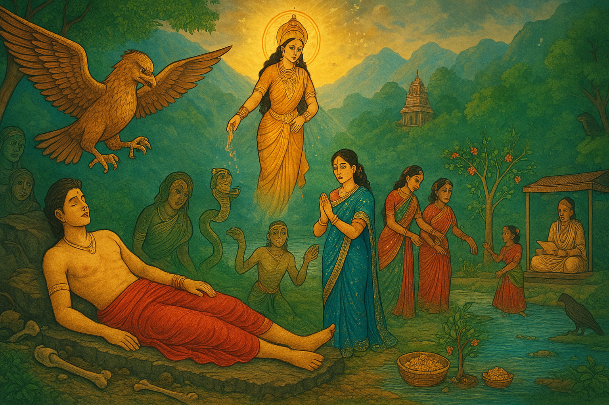

The Legend of Jimutavahana: A Detailed Story of Sacrifice and Compassion

The legend of Jimutavahana, also known as Jimutvahana or Jitvahan in various regional retellings, is an ancient tale rooted in Buddhist and Hindu traditions. It originates from the Katha-Sarit-Sagara (The Ocean of the River of Stories), an 11th-century Sanskrit compilation by Somadeva Bhatta, and was later dramatized in the 7th-century CE Buddhist play Nagananda (The Joy of the World of Serpents) by Emperor Harsha (also known as Sri Harsha Deva). This story emphasizes themes of self-sacrifice, compassion for all beings, and the triumph of benevolence over violence. It forms the mythological basis for the Jitiya festival (also called Jivitputrika, Jiutiya, or Jiuntia), observed primarily by mothers in regions like Nepal, Uttar Pradesh, Bihar, and Jharkhand in India. During the festival, mothers fast—often without water—for the long life and well-being of their children, drawing inspiration from Jimutavahana's heroic act of saving a serpent's life at the cost of his own.The tale has subtle variations across regions and sources, reflecting cultural adaptations. In some versions, Jimutavahana is portrayed as a Gandharva king; in others, as a Vidyadhara prince. Regional folklore in Bihar and Uttar Pradesh incorporates elements like a jackal and an eagle, symbolizing vigilance and protection, while in Jharkhand and Nepal, the story ties into rituals involving sacred fig trees, dances, and offerings to animals. Below, I'll retell the core legend in detail, weaving in these variations to explore all aspects, based on the Nagananda drama, Wikipedia accounts, and related sources. This compilation highlights the story's evolution from a Buddhist moral fable to a living festival tradition.
The Core Legend: Jimutavahana's Birth and Rise to Glory
In a distant era, in the snow-capped mountains inhabited by the Vidyadharas (celestial beings with magical powers), there ruled a wise and benevolent king named Jimutaketu. His kingdom was prosperous, blessed by a legendary wishing tree—a divine heirloom passed down from his ancestors—that could grant any desire. However, Jimutaketu and his queen longed for a child. In desperation, the king beseeched the wishing tree for a son. Miraculously, a boy was born, radiant and compassionate from the start. They named him Jimutavahana, meaning "he whose vehicle is the clouds," symbolizing his ethereal nature and destiny.
As Jimutavahana grew, his kindness became legendary. He spoke eloquently, advocating for peace and empathy toward all living creatures. One day, he approached his father and implored him to use the wishing tree not for personal gain but to eradicate poverty across the land. Touched by his son's selflessness, Jimutaketu agreed. The tree showered gold upon the people, bringing joy and prosperity. Jimutavahana's fame spread far and wide, even reaching rival kings filled with envy. Fearing invasion from relatives bent on seizing the wishing tree, Jimutavahana chose to renounce his claim to the throne to avoid bloodshed. He convinced his father to divide the kingdom among his brothers and relatives, then departed with his aging parents to the serene Malaya Mountains (identified in some texts as part of the Western Ghats or a mythical realm), where they could live in peace.
In the mountains, Jimutavahana befriended the local Siddha prince, Mitravasu, and fell in love with his sister, Malayavati—a beautiful maiden devoted to the goddess Gauri (Parvati). In a past life, Jimutavahana and Malayavati had been husband and wife, bound by karma. Gauri herself appeared in a dream to Malayavati, foretelling her marriage to the Emperor of the Vidyadharas. Their union was joyous, but Jimutavahana's life of exile was about to intersect with a greater cosmic tragedy.
The Plight of the Nagas and the Pact with Garuda
Deep in the mythological cosmos, a longstanding feud raged between the Nagas (serpent beings) and Garuda, the mighty eagle-like divine bird and vehicle of Lord Vishnu. According to ancient lore, Garuda's mother, Vinata, had been enslaved by her sister Kadru (mother of the Nagas) through deceit. In revenge, after obtaining nectar (amrita) from the gods, Garuda vowed to devour the Nagas. The serpent king, Vasuki, desperate to save his people, struck a grim pact: each day, one Naga would be offered as sacrifice on a sacred rock of death, known as the "Heap of Bones," to appease Garuda's hunger.
One fateful day, while wandering the Malaya Mountains with his friend Atreya (a comic vidushaka or jester in the Nagananda play), Jimutavahana heard mournful cries. He discovered an elderly woman weeping bitterly beside a young man. She introduced herself as the mother of Sankhachuda (or Shankhchud in some variants), a noble Naga prince from the Nagavansha (serpent lineage). Tearfully, she explained that it was her son's turn to be sacrificed to Garuda the next day—the last of her children, as all others had already perished. "We are bound by Vasuki's oath," she lamented. "Garuda comes like a storm, tearing us apart with his claws and beak."
Moved by compassion, Jimutavahana promised to save Sankhachuda. "I cannot bear the suffering of any being," he declared. "Let me offer myself in his place." Despite protests from the mother and son, Jimutavahana insisted. The next dawn, Sankhachuda lay on the rock as required, but Jimutavahana secretly took his place, draping himself in the red cloth meant for the sacrifice to mimic a Naga.
The Sacrifice and Garuda's Redemption
As the sun rose, Garuda descended in a whirlwind, his wings shaking the earth. Mistaking Jimutavahana for the Naga, he attacked ferociously—clawing at his chest and pecking at his body. Blood flowed, but Jimutavahana remained serene, uttering no cry of pain, his mind fixed on compassion. Intrigued by this unusual silence, Garuda paused and demanded, "Who are you? No serpent endures such torment without protest."
Jimutavahana revealed his identity: "I am Jimutavahana, King of the Vidyadharas. I offer myself to end this cycle of violence. Spare the Nagas, for all life is sacred." Sankhachuda, witnessing from afar, rushed forward and confessed the truth. Garuda, realizing he had assaulted a noble soul out of mistaken rage, was overwhelmed with guilt. "Your benevolence humbles me," Garuda said. "I vow to cease devouring the Nagas forever."
In a divine twist, the gods intervened. Flowers rained from heaven, and Goddess Gauri (or Guari in some texts) appeared, sprinkling nectar (amrita) on Jimutavahana's wounds, healing him instantly. Garuda fetched more nectar from the heavens, reviving all the slain Nagas whose bones littered the rock. Clothed anew and filled with gratitude, the Nagas, along with Jimutavahana's parents, wife Malayavati, and the assembled beings, praised his sacrifice. Jimutavahana was restored to his throne as Emperor of the Vidyadharas, ruling with wisdom and peace.
Regional Variations and Festival Connections
-
Bihar and Uttar Pradesh Variant: Here, the deity is often called Jiutvahan. A popular folklore addition involves a jackal and an eagle (symbolizing cunning and vision) who aid Jiutvahan in his quest. The jackal warns of dangers, while the eagle scouts for Garuda. Prayers are offered to these animals alongside Jiutvahan during Jitiya, emphasizing protection. Mothers fast strictly (Nirjala vrat, without water) on the second day (Khur-Jitiya), eating vegetarian food only after bathing on the first day (Nahai-Khai) and breaking fast with delicacies like noni saag and marua roti on the third (Parana).
-
Jharkhand Variant: Known as Jitiya, the festival spans eight days, starting from the full moon (Purnima). Women collect river sand secretly to sow eight seeds (rice, gram, corn, etc.), abstain from non-vegetarian food, and worship a sacred fig (Jitiya) branch. On the seventh day, offerings are made to jackals and eagles by the river. The story of Jitvahan is recited by a Brahmin, followed by all-night singing and Jhumar dances. The immersion of the fig branch symbolizes renewal, and garlands are placed on children for longevity.
-
Nepal Variant: Celebrated by Bhojpuri, Mithila, and Tharu women, it mirrors the Nirjala fast, often extending two days if Ashtami begins late. Fish and millet chapatti are eaten beforehand, and children are awakened for a pre-fast meal. Tharu women perform the Jhamta dance. The legend stresses that children escaping accidents owe it to their mothers' observance, linking to Jimutavahana's protective sacrifice.
-
Buddhist Influences in Nagananda: The play invokes Lord Buddha in its opening verse, framing the story as a moral lesson on ahimsa (non-violence). Jimutavahana's past life as a Vidyadhara and his encounter with a hermit add dramatic elements, with Atreya providing comic relief.
This legend, beyond its narrative, teaches that true power lies in empathy. In the Jitiya festival, mothers embody Jimutavahana's sacrifice, fasting to invoke divine protection for their sons (and sometimes daughters in modern interpretations), ensuring the story's enduring cultural relevance.
Connection Graph: Relationships Between Characters and Elements
To visualize the connections between characters, entities, and festival elements, I've created a Mermaid graph. It shows familial ties, alliances, conflicts, and symbolic links. Nodes represent key identities (with variations in names noted), and edges indicate relationships.
graph TD
A[Jimutavahana <br> (aka Jimutvahana, Jitvahan, Jiutvahan)] -->|Son of| B[Jimutaketu <br> (Father, King of Vidyadharas)]
A -->|Married to| C[Malayavati <br> (Wife, Sister of Mitravasu)]
A -->|Sacrifices for| D[Sankhachuda <br> (aka Shankhchud, Naga Prince)]
D -->|Son of| E[Naga Mother <br> (Unnamed, from Nagavansha)]
D -->|Part of| F[Vasuki <br> (King of Nagas)]
F -->|Pact with| G[Garuda <br> (Divine Eagle, Son of Vinata)]
G -->|Enemy of| F
G -->|Attacks then Redeems| A
A -->|Blessed by| H[Gauri/Guari <br> (Goddess Parvati)]
H -->|Heals with Nectar| A
G -->|Fetches Nectar from| I[Heaven/Gods <br> (Including Vishnu)]
J[Jackal] -->|Symbolic Aid/Offering in Bihar/UP/Jharkhand| A
K[Eagle] -->|Symbolic Aid/Offering in Bihar/UP/Jharkhand| A
A -->|Inspires| L[Jitiya Festival <br> (Mothers' Fast for Children's Well-being)]
L -->|Rituals Involve| M[Sacred Fig Branch <br> (Jitiya Tree in Jharkhand/Nepal)]
L -->|Story Recited in| N[Regions: Nepal, UP, Bihar, Jharkhand]
style A fill:#ffcc00,stroke:#333,stroke-width:2px
style G fill:#ff6666,stroke:#333,stroke-width:2px
style L fill:#66ccff,stroke:#333,stroke-width:2px